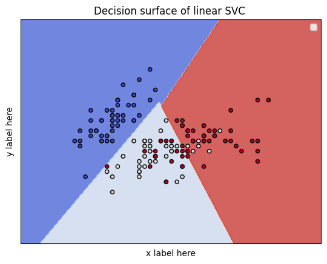
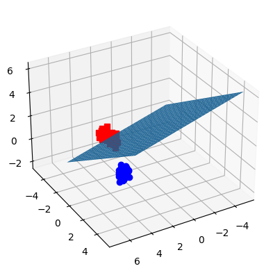

from sklearn.datasets import load_iris
import numpy as np
iris = load_iris()Support Vector Machine (SVM) Classification
Support Vector Machine Classification
Load the dataset iris
Declare X, y
X: independent variables, the features/attributes used for classification prediction y: dependent variables, the feature/attribute/target used for training and testing
X = iris.data[:, :2] # we only take the first two features.
y = iris.targetPrepare stages
training and testing dataset are splited with test_size as ratio. Here we use 80% for training and 20% for testing
from sklearn.model_selection import train_test_split
X_train, X_test, y_train, y_test = train_test_split(X, y, test_size=0.20)Train your model
from sklearn import svm
model = svm.SVC(kernel='linear')
clf = model.fit(X_train, y_train)Evaluate your model
y_pred = clf.predict(X_test)from sklearn.metrics import classification_report, confusion_matrix
print(confusion_matrix(y_test, y_pred))
print(classification_report(y_test, y_pred))[[9 0 0]
[0 5 4]
[0 5 7]]
precision recall f1-score support
0 1.00 1.00 1.00 9
1 0.50 0.56 0.53 9
2 0.64 0.58 0.61 12
accuracy 0.70 30
macro avg 0.71 0.71 0.71 30
weighted avg 0.70 0.70 0.70 30
Visualize the result
import matplotlib.pyplot as plt
def make_meshgrid(x, y, h=.02):
x_min, x_max = x.min() - 1, x.max() + 1
y_min, y_max = y.min() - 1, y.max() + 1
xx, yy = np.meshgrid(np.arange(x_min, x_max, h), np.arange(y_min, y_max, h))
return xx, yy
def plot_contours(ax, clf, xx, yy, **params):
Z = clf.predict(np.c_[xx.ravel(), yy.ravel()])
Z = Z.reshape(xx.shape)
out = ax.contourf(xx, yy, Z, **params)
return out
fig, ax = plt.subplots()
# title for the plots
title = ('Decision surface of linear SVC ')
# Set-up grid for plotting.
X0, X1 = X[:, 0], X[:, 1]
xx, yy = make_meshgrid(X0, X1)
plot_contours(ax, clf, xx, yy, cmap=plt.cm.coolwarm, alpha=0.8)
ax.scatter(X0, X1, c=y, cmap=plt.cm.coolwarm, s=20, edgecolors='k')
ax.set_ylabel('y label here')
ax.set_xlabel('x label here')
ax.set_xticks(())
ax.set_yticks(())
ax.set_title(title)
ax.legend()
plt.show()
Try a 3D Visualization
X = iris.data[:, :3] # we only take the first three features.
Y = iris.target
#make it binary classification problem
X = X[np.logical_or(Y==0,Y==1)]
Y = Y[np.logical_or(Y==0,Y==1)]
model = svm.SVC(kernel='linear')
clf = model.fit(X, Y)
# The equation of the separating plane is given by all x so that np.dot(svc.coef_[0], x) + b = 0.
# Solve for w3 (z)
z = lambda x,y: (-clf.intercept_[0]-clf.coef_[0][0]*x -clf.coef_[0][1]*y) / clf.coef_[0][2]
tmp = np.linspace(-5,5,30)
x,y = np.meshgrid(tmp,tmp)
fig = plt.figure()
ax = fig.add_subplot(111, projection='3d')
ax.plot3D(X[Y==0,0], X[Y==0,1], X[Y==0,2],'ob')
ax.plot3D(X[Y==1,0], X[Y==1,1], X[Y==1,2],'sr')
ax.plot_surface(x, y, z(x,y))
ax.view_init(30, 60)
plt.show()
Credit
- https://scikit-learn.org/stable/modules/svm.html#
- https://stackoverflow.com/questions/51495819/how-to-plot-svm-decision-boundary-in-sklearn-python